MakerVR User Guide
Overview
MakerVR helps you create models that you can then send to a 3D printer. It is designed to be relatively simple to use, even for someone with little to no 3D modeling experience. If you are intimidated by 3D modelers like Blender, you might find MakerVR useful.
MakerVR is inspired somewhat by OpenSCAD (my favorite program for creating 3D models). OpenSCAD is great if you don't mind typing in numbers for everything and have a reasonable amount of 3D graphics experience. MakerVR is designed to have a similar amount of power while still being useful to beginners.
Because precision is extremely important when 3D printing, MakerVR has several features that allow you to create models with exact dimensions, orientations, and positions.
VR and Non-VR Modes
MakerVR was originally designed to operate in a virtual environment because I it seemed like it would be a fun experience. But, since most people do not have a VR setup, I thought it might be useful if it also worked without VR, using just a conventional mouse and keyboard setup. And, since putting on and taking off a headset can be very inconvenient while developing an application (especially if you happen to wear glasses), I thought it might be useful and fun to allow using the VR controllers even without the headset. This turned out to be possible!
Each of these modes is called out in this guide when interaction differs among them. The modes are named as follows:
- VR mode is when you have a VR device hooked up, you are wearing the headset, and are holding the controllers.
- In conventional mode, you either do not have a VR device hooked up or you do, but are just choosing to use the mouse and keyboard.
- Hybrid mode is halfway between the other two: you have a VR device hooked up, you do not have the headset on, and you have at least one VR controller in your hand(s). Some behind-the-scenes nonsense takes place so that you can see the hands in the (non-VR) window.
Some VR experiences allow you or force you to walk around while using them. That wouldn't make sense for this application, so it is designed to make everything useful from one spot. If you're planning to use the VR mode, set it up for a comfortable, fixed standing or seated position. Note that the scene view is set up for sitting, so you may need to adjust your VR positioning for a different height if you prefer to stand.
Interaction
MakerVR responds to mouse and keyboard actions in any of the three modes. Let's assume everyone knows how to use them, including Keyboard shortcuts.
The VR controllers may be used in VR or Hybrid mode. MakerVR was developed using an HTC Vive (since that's what I have), but should (!) work with any standard VR controllers supported by SteamVR.
Controller use is as follows:

-
The controllers appear in the VR scene as hands that react to interaction, courtesy of SteamVR.
-
A cyan laser pointer emanates from the forward direction of each controller. the pinch action (usually some sort of trigger) activates whatever the laser is pointing to, if it is interactive. This action is equivalent to clicking the left mouse button on the same spot.
-
Some tools attach a hover guide to the hands to help indicate what will happen if you activate the grip action. The guide will show a pointer to the interactive element in the scene that will be activated when the grip button is pressed. There are different types of hover guides; see the documentation for the individual tools for details.
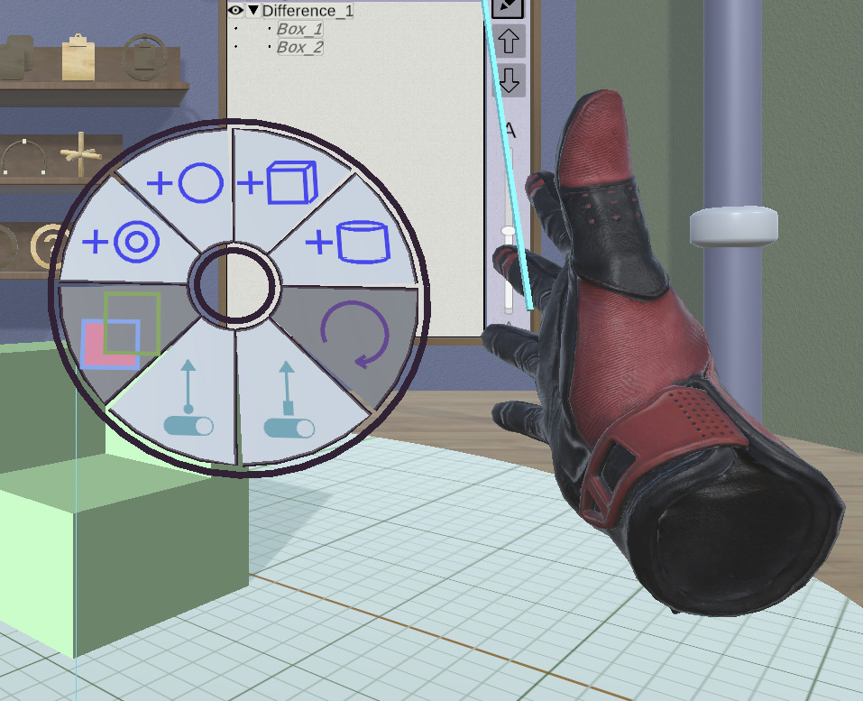
- The menu button activates a radial menu attached to the controller. Each item in the radial menu is a shortcut to some action. Slide your thumb around the trackpad to highlight the desired item and press anywhere on the trackpad to activate it. The menu is dismissed when you activate any radial menu button or if you press the menu button again or press any keyboard key. Note that radial menus are also available for use with the mouse in conventional mode via keyboard shortcuts. In this mode, the menu appears in a fixed position on the appropriate side of the window.
You can configure the radial menu for each hand in the Radial Menu Editor Panel.
Any panel that uses a dropdown list of options (such as the [Text Panel][#text-panel] for font family or style) allows scrolling of the list using the trackpad up/down buttons on a controller.
Any use of the word "drag" in this document refers by default to using the mouse or pinch action to grab some interactive widget and yank it around. A drag activated with the grip button held down will be called out as a "grip drag".
Text Input
Some parts of the application require text input: editing the name of a model, typing in a new file name, and maybe something else in the future. Who knows?
Using the keyboard is always an option for text. If you have the headset on in VR mode, you might not want to take it off or put the controllers down just to edit text. You're in luck; text editing in VR mode is available using VRKeys. It provides a virtual keyboard with a xylophone-like interface for editing text. It's pretty cool.
In front of the virtual keyboard is a bar that can be used to reposition the keyboard. Holding down a grip button on either controller allows you to drag the bar and keyboard in all three dimensions to make it easier to access.
Alternate Input Mode
A few operations can be modified by either pressing the shift key on the keyboard, pressing the center of either controller trackpad, or by double-clicking. You will see this referred to as "Alternate Mode" or just "Alt" in this documentation. For example, when clicking on a model to select it, the Alt version is to multi-select the model or deselect it if it is already selected. When dragging a handle in the Scale Tool, the Alt version performs a symmetric scale about the model's center point.
Sessions
Unlike many applications that save your work as a data file, MakerVR stores your session as a series of commands that you have executed. This means that you can save your session, quit, restart your session, and be back pretty much where you were. You can undo all of your work back to the beginning, if you feel like it.
When you start the application, the first thing you see is the Session Panel. It offers you the chance to continue the current session (if there is one), load a different session, or start a new session. The location of saved sessions is customizable in the Settings Panel.
The current state of various settings (such as whether targets and edges are visible) is saved along with the session and is restored when the session is loaded.
The name of the current session file is displayed at the top of the Tree Panel. The name is followed by a string indicating whether the scene or settings have been modified.
The Work Area
The work area in MakerVR is based conceptually on a virtual workshop. You may notice the following elements:
- Four walls, a floor, and a ceiling. They just provide scene context.
- An exit sign. Clicking on this exits the application.
- A large disc in the middle of the floor with a grid on it. This is the stage, where your models will appear. The stage can be manipulated to change your view of the models. Drag it in a circular arc to rotate it. Drag it toward or away from the center to scale it up or down. In conventional mode, the mouse wheel (if any) also scales the stage. Alt-clicking on the stage resets it to its default size and orientation.
- A pole on the right with a ring around it. That ring is a slider that can be dragged up and down to raise and lower your view of the room. Clicking on the ring brings you back to the default height. Alt-clicking on the ring also resets to the default view direction, unless you are in VR mode (where the view always aligns with your head, of course).
- Several shelves with 3D icons on them. These represent various tools that can interact with models or change session state.
- A caliper to the right of the exit sign with text that shows the current precision, along with buttons to increase or decrease it. See Precision for details.
- A framed panel on the right of the back wall that has a bunch of stuff on it. This is the tree panel that shows your models in tree form and lets you interact with them there. It has enough features to warrant its own section.
Coordinate System and Units

MakerVR uses the same coordinate system that most 3D printing software uses: right-handed, with +X to the right, +Y away from the viewer, and +Z up. The stage surface is at Z=0.
Don't let the fact that this application is built on Unity with its ridiculous left-handed coordinate system bother you.
MakerVR is essentially unit-independent. The only places where units are considered are:
- When models are imported or exported from or to STL files.
- When the 3D printer build volume is shown.
The Settings Panel allows you to specify how to convert units when importing and exporting, and also how large the build volume is in whatever units you would like to work in.
For example, the application assumes everything is expressed in centimeter units. If your 3D printing software expects STL files in millimeter units, you can convert from centimeters to millimeters on export. If you are importing an STL file that is in millimeters, you can convert from millimeters to centimeters on import.
If you want for some reason to work in inches, you can just consider the working units to be inches, and use the same conversion facilities to convert to and from saner units.
Note that the grid on the stage has thin lines every 1 unit, with thicker lines every 5 units. The grid grows or shrinks with the stage so that you can always tell absolute sizes. The X and Y axes are colored red and green for reference.
Colors
Most everything in the application that aligns with the coordinate axes uses the standard RGB color scheme: X is red, Y is green, Z is blue, as shown above. This is true for noninteractive tool parts and interactive visual feedback.
Model Colors
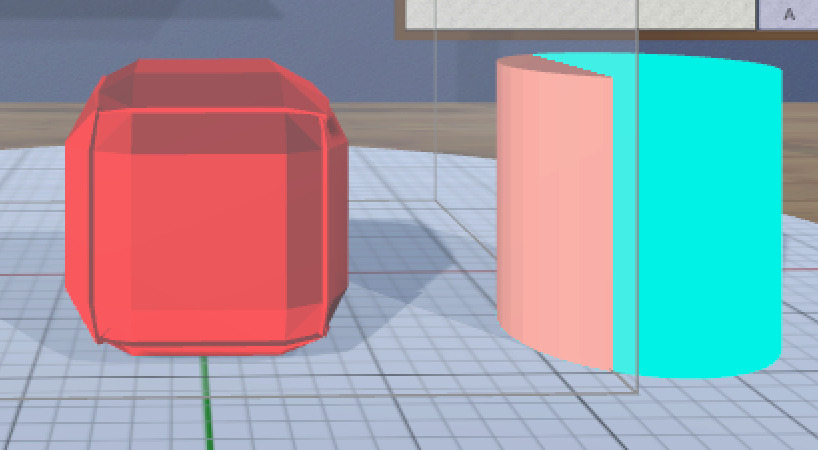
Reasonable colors are chosen automatically for new models created in the scene. The Color Tool allows you to change them for aesthetic reasons, since the colors have no effect on the 3D-printed model.
Two special colors are used for models that have invalid meshes (bright red) or that at least partly lie outside the current build volume (bright cyan) if the build volume is visible, as shown here.
When an invalid mesh is created (usually by the Profile Tool), it will retain the invalid mesh color until the problem is fixed. Changes made with the Color Tool will still take effect, but you will not be able to see them while the model is invalid. Also, some tools (such as CSG, Clip, and Convex Hull Tools) will be disabled when an invalid model is selected.
Tooltips
Anything in the application that is interactive responds to hovering with the mouse or laser pointer by highlighting in some way. For many items, if you hover long enough, a tooltip should appear with information about the interaction. Hovering over a model shows the name of the model.
The delay for showing tooltips is a setting that can be edited in the Settings Panel. Setting the delay to 0 turns off tooltips completely.
Precision

Manual interaction is usually imprecise, so MakerVR provides several features to help with that. One is a variable precision setting for drag operations. The change created by an interactive drag or grip drag is snapped to the current precision setting.
The precision control (with the caliper to the right of the exit sign) shows the current precision setting. There are three such settings that apply to both linear and angular operations (shown here using centimeter units):
- 1cm / 15°
- .1cm (1mm) / 5°
- .01cm (.1mm) / 1°
If you need higher precision than the finest values here, you should probably use a different application.
The buttons to the left of the calipers increase or decrease the current
precision. There are also shortcuts: X and Z keys on
the keyboard and the Up and Down buttons on the VR controller trackpad.
Modifying the precision setting is most useful during a drag or grip drag operation, when it has the following effects:
- Updates the precision control text.
- Changes the precision of the current operation (position, size, etc.).
- Changes the precision of the [visual feedback][#feedback].
- Changes the relative amount of drag motion. This may be startling at first, but makes sense when you try it out. For example, if you want to move an object exactly 5.45cm to the right, you start out with 1cm precision and drag it 5cm. While still in the drag operation, increase precision to .1cm and drag it .4cm more. This uses the same amount of drag motion that 4cm would at 1cm precision, so it's much easier. Finally, increase precision again to .01cm and drag another .05cm to the right, again with the corresponding amount of drag motion. This behavior is applied to both drags and grip drags.
Once you get used to this, it becomes relatively easy to apply precise changes interactively. See the section on targets for another aid.
Feedback
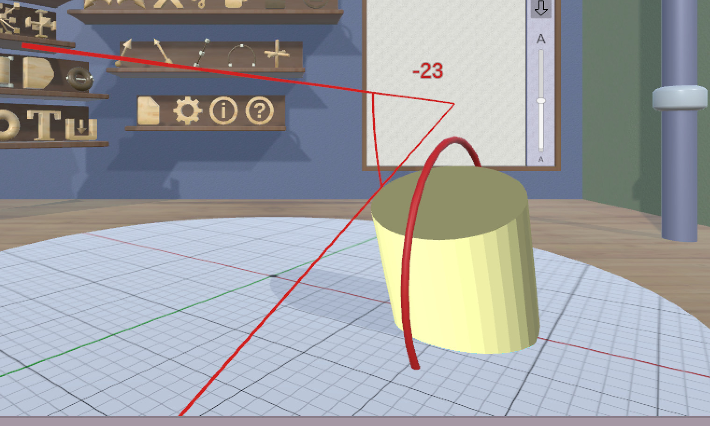 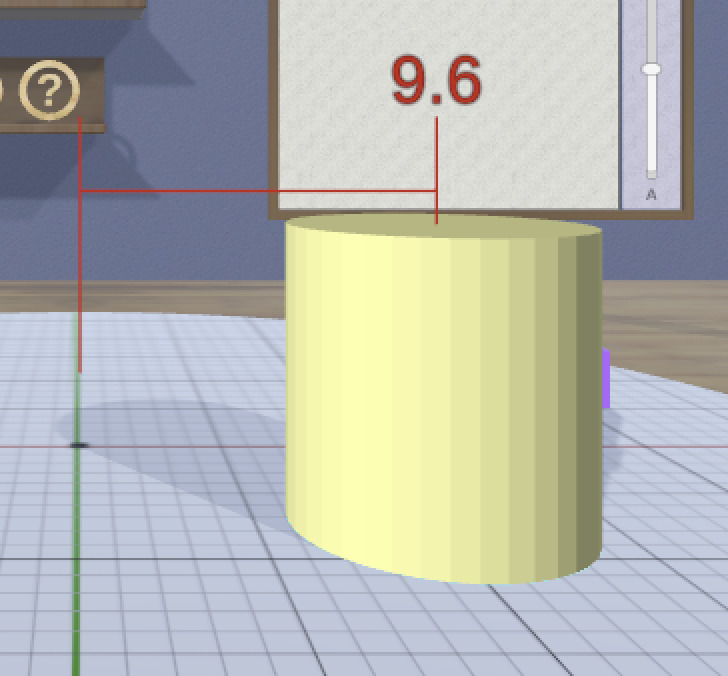
Most interactive drag operations display some sort of visual feedback. Operations that are essentially linear show the current dimension of that change along a line, while rotations show the current angle. Multi-dimensional changes such as uniform scaling and spherical rotation show feedback in all affected dimensions. The precision of the feedback matches the current precision setting.
Feedback is colored according to the coordinate system convention for the appropriate dimension(s). When a drag is snapped to a target, feedback is displayed in the active target color.
Targets
Interactive placement can often be tedious, so MakerVR offers some shortcuts for some operations using targets. There are two such targets available in the application, the point target and edge target.
To activate or deactivate a target, click on the corresponding toggle tool. A target becomes visible when activated, appearing initially in the center of the stage. If it is obscured by models, you can use the Tree Panel to hide those models temporarily.
Targets can be dragged with the mouse or pinch action to other locations, as described below. When dragging on the stage, the targets snap to grid locations based on the current precision. When a target is dragged, its color changes from the standard target color (cyan) to the active target color (orange).
Point Target

The point target indicates a position (shown by the sphere at the base) and orientation (shown by the arrow) in the scene. To activate or deactivate the point target, click on the Point Target Toggle Tool.
When the point target is active, dragging during a position-based operation (such as translation) snaps to the target's position in all affected dimensions. When snapping occurs during one of these operations, both the feedback and target change to the active target color.
The point target can also be used for instantly moving a model, and it has other features that let it be used be used for radial layout; see the Radial Layout Tool for details.
The point target can be dragged to any point on a model or on the stage. When dragging on a model, the target location will snap to vertices of the model's triangular mesh when close enough to them, based on the current precision. When this occurs, a snap indicator (sphere at the tip of the target's arrow) will appear.
Alt-dragging the point target on a model uses the rectangular bounds of the model instead of its mesh. The target will snap to the minimum, maximum, and center values of the bounds in each dimension. The snap indicator sphere will appear when any snapping occurs, and is color-coded by dimension. If snapping occurs in two dimensions, the color will be the sum of the two dimensions' color. For example, if alt-dragging the point target on the front (-Y) face of a model's bounds, the indicator will be red (X) when snapping to the left edge, center, or right edge of the face. It will be blue (Z) when snapping to the bottom edge, center, or top edge of the face. It will be magenta (red + blue) when snapping to both at the same time. You can use this feature to more easily attach the point target to important points on objects with asymmetric meshes.
Edge Target

The edge target indicates a length and orientation in the scene. To activate or deactivate the edge target, click on the Edge Target Toggle Tool.
When the edge target is active, dragging during a size-based operation (such as scaling a model or changing a cylinder or torus diameter) snaps to the target length. When snapping occurs during one of these operations, both the feedback and the target change to the active target color.
The edge target can also be used for immediate linear layout. See the Linear Layout Tool for details.
When dragged over a model, the edge target snaps to the nearest edge of that model's mesh. To see model edges more clearly, you can use the Show Edges Toggle Tool (except on OSX). If the edge target is dragged from a model to the stage, it retains the length of the last edge it snapped to. Clicking on the edge target reverses its direction, which is useful when using the Linear Layout Tool.
Alt-dragging the edge target on a model uses the rectangular bounds of the model instead of its mesh; the target will snap to the nearest edge of the bounds. You can use this feature to easily set the edge target length to any dimension of a model's bounds.
Selection
Some of the tools operate on the currently selected model or models. To select a model, click on it with the mouse or pinch action. The current editing tool will be attached to it if it is compatible; if not, a different tool will be attached.
Multiple models can be selected by alt-clicking on them. Alt-clicking an unselected model adds it as a selection, while alt-clicking a selected model deselects it.
Models that are composed of other models generally hide those child models. For example, combined models hide their constituent parts. You can make the child models visible by selecting them, using either the Tree Panel or the following keyboard shortcuts:
Ctrl-DownArrowselects the first child of a composite model.Ctrl-LeftArrowselects the previous sibling of a child or a top-level model, wrapping around as necessary.Ctrl-RightArrowselects the next sibling of a child or a top-level model, wrapping around as necessary.Ctrl-UpArrowselects the parent of a child model.
In addition, Ctrl-A selects all top-level models and Shift-Ctrl-A deselects
everything. You can also deselect everything by clicking on a wall or anywhere
else in the work area that is not interactive. (Keep in mind the stage is
interactive, so it doesn't count.)

When more than one model is selected, the first selected model is known as the primary selection, and all other selected models form the secondary selections. The current editing tool is attached to only the primary selection. All secondary selections are indicated with a passive blue wireframe box. Some tools treat the primary and secondary selections differently.
The Tree Panel can also be used to see and change the current selection.
Combining Models
One of the main features of MakerVR is the ability to create new models by combining models.
CSG
You can apply any of the three constructive solid geometry (CSG) operations to two or more models:
- Union adds all of the models together.
- Intersection uses the intersection of all selected models.
- Difference subtracts all secondary selections from the primary selection. Unlike the other two operations, difference is asymmetric, so the selection order really matters.
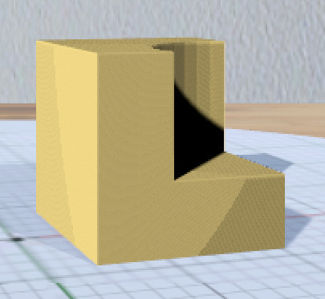
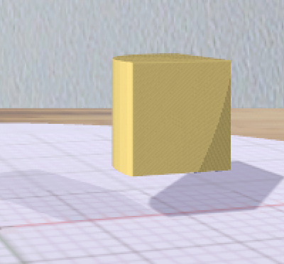
 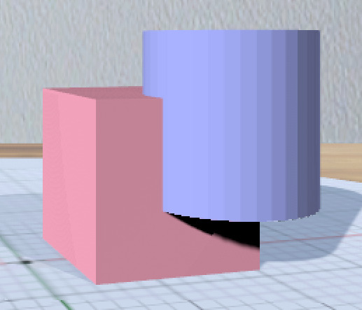
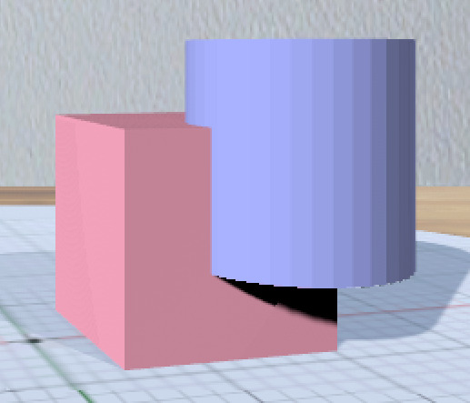
These images show the original operand models, a box and a cylinder, and the resulting CSG union, intersection, and difference (cylinder subtracted from the box).
Note that the Clip Tool may also be helpful for simpler cases of geometric editing.
Convex Hull

Another way to combine models is the convex hull operation, which creates a new model from the 3D convex hull of all selected models. This can be used to easily create different shapes. For example, here is an easy way to create a capsule by applying the hull operation to two spheres.


The hull operation also can be useful to apply to a single model, if the model is not already convex. Here's an example of creating a rounded disk as the hull of a torus.
Some Patience Required
MakerVR uses the CGAL library to compute the combinations of objects. Even though this library is very powerful, robust, and well-optimized, it can still take some time to compute the results in complex cases. This work is performed in a separate thread so that the application is not frozen while it happens. While the computation is active, the combined model may be displayed as a 3D hourglass and the mouse cursor (visible when not in VR mode) will also be an hourglass.
Tools
Finally! We get to the actual tools. As mentioned previously, the tools are represented by 3D icons organized into shelves in the work area.
There are four basic types of tools:
- Tools that perform an immediate action, such as creating a cylinder.
- Tools that toggle some sort of mode.
- Tools that attach to the selected model and that provide some interactive features you can click or drag to edit some aspect of those models.
- Tools that bring up some sort of GUI panel.
Icons for tools that are disabled due to the current program state are rendered as dark. Active icons, such as the current attached tool or toggles in the "on" state, are rendered using the active color, which is reddish.
In case it wasn't obvious, you can use the mouse or laser/pinch to activate an
enabled tool. You can switch to a different enabled tool for the primary
selection with the next-tool shortcut (] key or Right on either
VR controller trackpad) or the previous-tool shortcut ([ key or Left on
either trackpad).
Model Creation Shelf
This shelf is at the bottom on the left of the work area. It has icons for the four primitive objects that can be created: box, cylinder, sphere, and torus. Clicking on any of these icons creates a new instance of the corresponding shape, which drops in from above.
If the point target is active (visible), any new model will be placed with its bottom center point at the base of the point target, with the model's "up" direction aligned with the point target's direction arrow.
The fifth icon (capital 'T') creates extruded 3D text. Clicking this brings up the Text Panel to let you specify the text and font. If a single text model is selected, the Text Panel will not create a new model; it will instead be used to modify the selected text model.
The right-most icon is used to import a model from a file. Clicking this icon opens a File Panel that lets you choose a file to import. Right now the only supported format is STL (text or binary), which is the standard for most 3D printer software. The default directory for this panel can be changed in the Settings Panel.
If an imported model is selected and you click on the Import Model icon, it asks if you want to re-import the model. This can be useful when you are using an external program to edit the model and want to update it inside MakerVR. Note that an STL file must define a closed (watertight) 3D model for it to be imported successfully. An invalid model will be shown as a gray tetrahedron; it will remain that way until you re-import a version that is valid.
Model Editing Shelves
The two shelves above the Model Creation Shelf contain the model editing Tools. These are the main interactive gizmos that let you modify different aspects of models.
Clip Tool
The Clip Tool allows you to remove parts of models with one or more clipping planes. This tool has three interactive parts:

- A translucent quadrilateral representing the clipping plane. Clicking this quadrilateral activates the tool to clip the selected model(s).
- An arrow indicating the normal to the clipping plane. The part of the selected model(s) on the side of the plane with the normal is what will be clipped away when the plane is clicked. Dragging the arrow lets you reposition the plane along the normal.
- A translucent sphere that lets you change the orientation of the clipping plane.
Clipping a model for the first time replaces it with a new, clipped version of the model. Additional clipping planes can be applied to the same clipped model. When the Clip Tool is attached to a clipped model, it aligns itself with the most recent clipping plane applied to that model.
Translating the plane by dragging the arrow is limited by the extents of the primary model; it will not let you move the plane completely off this model. The plane will snap to the point target location if the target is active or to the center of the primary selection. The plane will change color to the target color when snapped to either point. Alt-dragging the arrow deactivates any snapping.
When rotating the plane by dragging the sphere, the plane normal will snap to the point target direction if the target is active or to any of the principal axes. If the Axis-Aligned Toggle Tool is active, the principal axes of the stage are used; otherwise, the local axes of the primary model are used. The plane will change color when snapped to either the target color or the color corresponding to a principal axis. Alt-dragging the sphere deactivates any snapping.
When interacting (either translating or rotating), all selected objects will be clipped in real time to show what will happen when the plane is clicked. The real-time clipping stops when interaction ends.
Grip-dragging works for both translation and rotation. If the controller is oriented so that the hover guide attached to the controller is nearly parallel to the plane normal arrow, grip-dragging will translate the plane along the normal based on the controller position. Otherwise, grip-dragging will rotate the plane based on the controller orientation. Snapping occurs as above unless alt-dragging.
Color Tool
The Color Tool edits the color of all selected models. It is placed above the primary selection. The disc in the center of the tool shows the current color of the primary selection, as does the small marker in the outer ring. Clicking or dragging anywhere in the ring moves the marker and changes the color of all selected models. Grip-dragging works as well; the relative position of the controller is used to move the marker around the ring.
Colors have no real effect on the 3D-printed model, but they can be used to distinguish different parts while editing. Or just to make things look nicer.
Complexity Tool
The Complexity Tool appears above the primary selection and changes the number of triangles used to represent all selected primitive objects. It has no effect on boxes or imported models, but does work on spheres, cylinders, tori, and text objects.
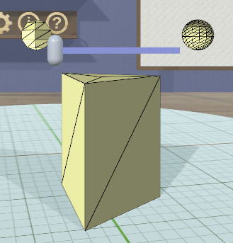
Dragging the slider handle on the Complexity Tool updates the number of triangles used for all affected selected models. Grip-dragging also works; the relative position of the controller moves the handle. These images show two positions of the handle applied to a cylinder's complexity.
The Complexity Tool will be disabled if the primary selection is a type (such as a box) that cannot have its complexity modified. If the primary selection is a profiled model or combined model, you cannot modify its complexity directly is the primary selection. You can select child models of one of these to modify its complexity; the parent model will update appropriately when its children are no longer selected.
Note that you can use complexity to create variations of models. The lowest complexity cylinder is a triangular prism, and the lowest complexity sphere is an octohedron. You can use the Show Edges Toggle Tool to see the triangle edges more clearly as in these images (except on OSX).
Cylinder Tool
The Cylinder Tool is enabled when a primitive cylinder model is the primary selection. It allows the top and bottom radii of the cylinder to be changed to create cones or truncated cones.

The tool consists of a double-ended slider at the top and bottom. The pair of handles on each slider work symmetrically. The radius being modified follows the current precision setting and also snaps to the current edge target length if the target is active. Feedback shows the current radius value during a drag.
Grip-dragging also may be used to modify either radius. A hover guide attached to each controller shows which slider handle will be activated when the grip button is pressed. The relative position of the controller chooses the top or bottom radius.
Mirror Tool
The Mirror Tool mirrors selected models across a plane. When the tool is active, it adds 3 color-coded orthogonal planes to the primary selection. Clicking on any of the planes mirrors the model across it.
The planes always pass through the center of the primary selection. If multiple models are selected, secondary selections are mirrored across the same planes, meaning that they will move to the opposite side of the plane if they are not also bisected by the plane. However, alt-clicking on a plane causes all models to be mirrored in place as if the plane passed through all of their centers.
The Axis-Aligned Toggle Tool affects how the Mirror Tool is attached to the primary selection when the primary selection has been rotated. If the toggle is active, then the planes will always be aligned with the cartesian planes of the stage, rather than with the local coordinates of the primary selection.
Applying the Mirror Tool to a model creates a new model. The original model becomes a child of the mirrored model; you can see it in the Tree Panel and select it if you want to modify it.
Profile Tool
The Profile Tool lets you edit the edge profile of selected models to create various effects such as beveling, chamfering, or rounding. The profile change is applied to edges of all selected models.
If you activate the Profile Tool for a model that has not yet had its edge
profile modified, the tool brings up a GUI panel with a single
button that lets you create a default profile for the model. Clicking this
button will apply the default profile to the model to create a bevel. If
multiple models are selected, the Create Profile button will appear only if
at least one of the models does not already have edge profiles.
If all selected models have edge profiles, or if you click the Create Profile
button, the Profile Tool switches to editing mode and shows the current profile
in the panel above the primary selection. This image shows the default profile
initially created for a model, creating a simple bevel on all edges.
The line drawn in the panel represents the profile that will be applied to each edge of the selected Models. The upper-right corner is where the edge is located; the default profile creates a bevel that cuts off the top-right half of the edge as can be seen in the beveled cube in the above image.
The upper-left and lower-right points of the profile are at fixed locations and are colored blue to indicate this. You can add new points between them, move those points around, and delete points, as described below. The selected Models update as the profile is edited.
Editing the Profile with Mouse or Pinch
Clicking anywhere on or near the profile line (except very close to an existing point) creates a new interior point at that spot. New points are rendered the same way as other interactive objects to indicate that they are movable. Dragging on or near the line (instead of clicking) creates a new point and immediately starts dragging it. Dragging an existing interior point moves it; when you do this, a box with an "X" in it appears to allow you to delete the point by dragging it over that box, as illustrated here.
Editing the Profile with Grip Drag
When in VR mode or hybrid mode, holding either VR controller so that the hover guide points forward (toward the sheet) will highlight all movable points and also the midpoint of each profile line segment, whichever is closest to the current relative controller position. The midpoint is rendered as a blue square, as shown here. When a point is highlighted, grip dragging moves that point. When a midpoint square is highlighted, grip dragging creates a new point along that segment and starts dragging it. As in the mouse/pinch case, a delete box with an "X" appears to allow points to be removed.
Profile Scaling


The slider at the bottom of the panel allows you to scale the size of the profile as it is applied to edges without having to readjust any points. For example, you can create a rounding profile and change the radius by adjusting the slider as shown here.
Maximum Angle

The slider on the right of the sheet allows you to change the maximum edge angle, from 0 to 180 degrees. This determines which edges are affected by the tool. For example, suppose you have a cylinder and want to apply the profile to just the edges forming the top and bottom faces, as shown here. These edges form 90 degree angles, so as long as the maximum angle is at least 90, they will have the profile applied. The edges between faces forming the sides are typically greater than 90 degrees (unless the cylinder has very low complexity); as long as the maximum angle is smaller than that angle, profiles will not be applied to those edges. The default is 120 degrees.
Rotation Tool
The Rotation Tool lets you rotate selected models. It has 3 color-coded rings for rotating about the cartesian axes and a central sphere for doing free spherical rotation. The rotation angle follows the current precision setting and also snaps to the current point target direction.
Color-coded feedback shows the current rotation angle or angles during a drag.
Rotation always takes place about the center of the primary selection. If multiple models are selected, secondary selections are rotated around the same point, meaning that they revolve around the primary selection. However, alt-dragging the tool causes all models to be rotated in place about their own centers.
The Axis-Aligned Toggle Tool affects how the Rotation Tool is attached to the primary selection. If the toggle is active, then the rings will always be aligned with the cartesian planes of the stage, rather than with the local coordinates of the primary selection.

Grip-dragging uses the orientation of the VR controller to define the rotation. A hover guide attached to each controller hand indicates what action will be performed. Note that the hover guide for rotation points forward from the hand, unlike most other hover guides. When the ring on the guide is close to aligning with any of the axis rings on the Rotation Tool, the guide will show a color-coded connection to that ring. (In the picture here, the ring is close to aligning with the red X-axis rotation ring of the Rotation Tool.) In any other orientation, the guide will show a neutral-color connection to the center sphere. If a ring is hovered, pressing the grip button and rotating the controller ring around the guide axis will rotate the model(s) the same way. When no ring is selected, the model(s) will be free rotated to match the controller orientation.
Scale Tool
The Scale Tool lets you change the size of selected models. It has several double-ended sliders:
- Three sliders aligned with the coordinate axes of the primary model. These scale nonuniformly in one dimension.
- Eight sliders passing diagonally through edge centers. These scale nonuniformly in two dimensions.
- Four sliders passing diagonally through the corners of the primary model. These scale uniformly in all three dimensions.
Any dimension being scaled follows the current precision and snaps to the current edge target length if the edge target is active. Color-coded feedback shows the current relevant dimension or dimensions of the primary selection during a drag.

There are two scaling modes:
- Asymmetric scaling resizes the model about the opposite point. That is, when you drag a slider handle, the handle on the other end stays fixed. This is the default scaling mode when dragging a handle.
- Symmetric scaling resizes the model about its center. When dragging a slider handle in this mode, the handle on the opposite side moves the same amount in the other direction. Alt-dragging a slider handle performs symmetric scaling.
If multiple models are selected, all secondary selections are scaled in place in their local orientations by corresponding ratios. The Axis-Aligned Toggle Tool has no effect on the Scale Tool, since it might cause confusing shearing to occur.
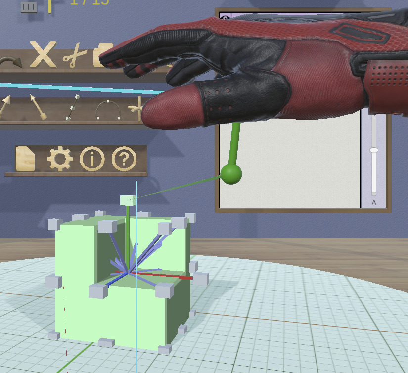
Grip-dragging uses the orientation of the VR controller to select a slider handle to activate. A hover guide attached to each controller hand shows the direction that needs to align with the slider to activate its handle. When the guide is close enough to being aligned with a slider, the guide will show a color-coded (neutral if not a 1-dimension slider) connection to the closest handle of that slider. When a handle is highlighted in this manner, pressing the grip button and moving the controller along the slider direction scales the model(s).
Torus Tool
The Torus Tool is enabled when a primitive torus model is the primary selection. It allows the inner and outer diameters of the torus to be
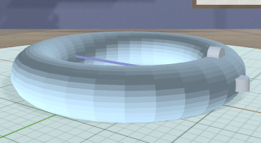
The tool consists of two double-ended sliders, one horizontal and one vertical. The horizontal slider changes the outer diameter, and the vertical slider changes the inner diameter. The handles operate symmetrically. The diameter being modified follows the current precision setting and also snaps to the current edge target length if the target is active. Feedback shows both diameter values during a drag.
Note that if the inner diameter is increased too much, the outer diameter will be increased as well to keep the torus from intersecting itself. Reducing the inner diameter during the same drag operation will reduce the outer diameter as well up to its previous size.
Grip-dragging also may be used to modify either diameter. A hover guide attached to each controller shows which slider handle will be activated when the grip button is pressed. The relative orientation (horizontal or vertical) of the controller and guide chooses the outer or inner diameter.
Translation Tool
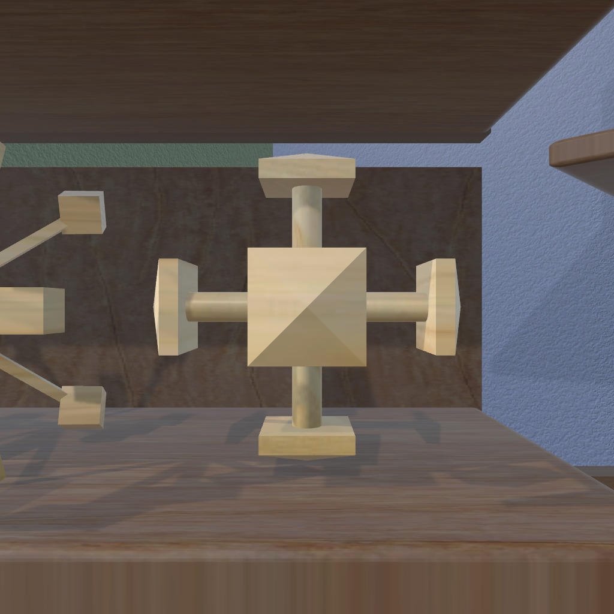
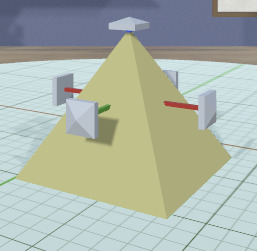
The Translation Tool lets you change the position of selected models. It adds a double-ended slider along each of the cartesian axes. Dragging the handle at either end translates all selected models along the corresponding axis. Translation offsets follow the current precision setting. The translation also snaps to the current point target location if the target is active; snapping is done when the minimum, center, or maximum value of the primary model in the translated dimension is aligned with the target position. Color-coded feedback shows the current translation amount during a drag.
The Axis-Aligned Toggle Tool affects how the Translation Tool is attached to the primary selection. If the toggle is active, then the sliders will always be aligned with the cartesian axes of the stage, rather than with the local coordinates of the primary selection.

Grip-dragging uses the orientation of the VR controller to select a slider handle to activate. A hover guide attached to each controller hand shows the direction that needs to align with the slider to activate its handle. When the guide is close enough to being aligned with a slider, the guide will show a color-coded connection to the closest handle of that slider. When a handle is highlighted in this manner, pressing the grip button and moving the controller along the slider direction translates the model(s) along the axis in either direction (pull or push).
Combining Shelf
This shelf is at the top on the left of the work area. It has icons for different operations that combine models in the scene.
The first three icons represent the three supported CSG operations, difference, intersection, and union. These icons are enabled when two or more models are selected. Clicking on any of the icons creates the corresponding CSG combination of the selected models. If a single CSG model is selected, clicking on either of the two enabled CSG icons changes the operation for that model to the corresponding one.
The last icon is for the Convex Hull operation. This is enabled when anything is selected, since it can be useful to apply to a single model.
When any of these operations is applied, the original models become children of the combined model; you can see the tree hierarchy in the Tree Panel. You can also select the children if you want to change them within the combined model.
Note that the combining operations, particularly complex CSG, may be slow.
Basics Shelf
The "Basics" shelf is the top shelf on the back wall of the work area. It contains icons for the standard operations you would expect to find in most interactive applications.
Undo Tool
The Undo Tool undoes the last operation performed that modified the scene in some way. This includes:
- Any change to a model or models.
- Changing the position or any other feature of either of the targets.
Actions that are not considered changes and are therefore not undoable include:
- Changing the view or the stage.
- Selecting or deselecting models.
- Toggling any program state, such as target visibility or axis alignment.
- Using the Copy Tool, since it has no visible effect except to update the clipboard. Note that you may be able to use this to your advantage.
Hovering over the Undo Tool shows a tooltip indicating what operation will be undone (if tooltips are enabled).
Redo Tool
The Redo Tool redoes the last undone operation. Hovering over the Redo Tool shows a tooltip indicating what that operation is (if tooltips are enabled).
Delete Tool
Clicking the Delete Tool deletes all selected models from the scene. They are gone forever, unless you undo.
Cut Tool
Clicking the Cut Tool copies all selected models from the scene into the clipboard and removes them from the scene.
Copy Tool
Clicking the Copy Tool copies all selected models from the scene into the clipboard.
Paste Tool
Clicking the Paste Tool pastes all models from the clipboard into the scene as top-level models at their previous locations.
Paste Into Tool
The Paste Into Tool can be used to paste models from the clipboard as children of the selected model, as long as that model is one that can have children.
For example, if you have a CSG union model and you want to add another piece (say, a box) to it, you can cut or copy the box (in the correct position, of course), select the CSG union, and click the Paste Into Tool. The box will be added as a child of the union.
Layout Shelf
The layout shelf is the center shelf on the back wall of the work area. It contains icons for operations that can help lay out models with respect to each other..
Point Target Toggle Tool

The Point Target Toggle Tool toggles the visibility of the point target. When the point target is made visible for the first time, it is placed at the center of the stage. After it is dragged to any other location, it stays there until dragged again.
If the target is enabled but is not visible, it may be obscured by models. You can use the Tree Panel to hide those models temporarily.
Edge Target Toggle Tool
The Edge Target Toggle Tool toggles the visibility of the edge target. When the edge target is made visible for the first time, it is placed at the center of the stage. After it is dragged to any other location, it stays there until dragged again.
If the target is enabled but is not visible, it may be obscured by models. You can use the Tree Panel to hide those models temporarily.
Linear Layout Tool
The Linear Layout Tool can be used to lay out two or more models along a line. The length and orientation of the edge target will be used to lay out the centers of all secondary selections relative to the primary selection.
It may be useful to create a temporary model with the correct size as a layout aid. For example, suppose you want to lay out 3 models along the X direction with 6cm between their centers:
- Create a box and scale it so that it is 6cm in size in X (using 1cm precision).
- Activate the edge target and drag it onto one of the box edges in the X direction. The target will then be exactly 6cm in length and lie along the X axis. Click on the edge target to flip it if it is pointing in the wrong direction.
- Delete the box if you no longer need it.
- Select the primary selection - the one that will not move.
- Alt-select the other models to lay out, in order.
- Click on the Linear Layout Tool.
Radial Layout Tool
The Radial Layout Tool can be used to lay out models along a circle or circular arc. All of the parameters of the layout are specified using the point target.
The point target has a location (where the sphere is) and a direction (where the arrow is pointing). If only one model is selected and the Radial Layout Tool is clicked, the bottom center of the model will be moved to the target location and its "up" direction will be aligned with the target direction.
If two or more models are selected, clicking on the Radial Layout Tool will lay them out along a circle or arc. To set this up, you can use some extra features of the point target. To use them, drag the ring of the target to make it larger. As you do this, you will see [feedback][#feedback] above the arrow showing the current diameter of the ring. This corresponds to the diameter of the circle or arc for your layout. The radius follows the current precision setting.

Intersecting the ring are two spokes, one green and one red. These are used to modify the starting and ending angles for layout, respectively. If you drag the green (starting) spoke, both spokes rotate around the circle. If you drag the red (ending) spoke, only the red spoke moves. The arc connecting the spokes shows the direction of the layout (green to red). If you want to reverse the direction, drag the red spoke past the green one in the desired direction. As you drag either spoke, color-coded feedback shows the angle of each spoke and the subtended layout angle. Note that the spoke angles follow the current precision.
Once you have set up the point target with the correct position, orientation, radius, and angles, clicking on the Radial Layout Tool will position all selected models with their bottom centers along the circle or arc. The selection order determines the order in which they are laid out: the primary selection will be at the start angle, and the last-selected model will be at the end angle.
When you are done, you can put the spokes back together and drag the radius down to its tiny state.
Axis-Aligned Toggle Tool
The Axis-Aligned Toggle Tool toggles whether certain tools operate in the selected model's local coordinates or in stage coordinates. For example, if a model has been rotated to an arbitrary orientation and you want to move it 5cm to the right in the scene, you can turn on axis-alignment and the Translation Tool will be oriented with the stage, not the model.
This toggle affects the following interactive tools:
File Shelf
The file shelf is the bottom shelf on the back wall. It has four icons, each of which brings up a specific GUI Panel.
Session Panel Tool
The Session Panel Tool brings up the Session Panel which allows you to save your session, load a new session, and so on.
Settings Panel Tool
The Settings Panel Tool brings up the Settings Panel which allows you to edit application settings.
Info Panel Tool
The Info Panel Tool brings up the Info Panel which shows information about all selected models.
Help Panel Tool
The Help Panel Tool brings up the Help Panel which displays the application version and has buttons to open help in a browser.
Viewing Shelf
The viewing shelf is the shelf just above the Tree Panel on the back wall. It has icons for tools that deal with viewing models.
Show Edges Toggle Tool
The Show Edges Toggle Tool lets you see edges of your models as visible lines. This can help you see how your models are tessellated into triangles for 3D printing or to help place the Edge Target. Note that this feature is not available on OSX, due to shader limitations; it is always disabled on that platform.
Build Volume Toggle Tool

The Build Volume Toggle Tool shows or hides a representation of your 3D printer's build volume as a translucent box. You can specify the size of the build volume in the Settings Panel.
When the build volume is visible, parts of models that lie outside it are rendered in a special color to let you know that you are likely to have problems printing them as is.
Inspect Selection Tool
MakerVR provides a special inspector mode that lets you easily examine a model from all directions. To inspect a model, select it as the primary selection, and click on the Inspect Selection Tool to turn it on. Another shortcut to this mode is to long-press (more than a half-second or so) either the mouse or laser pointer/pinch on a model. There is also a keyboard shortcut.
When in VR mode (headset on), the model will be attached to the controller in the hand that initiated the inspection. You can move and turn your hand around to see the model from all angles.
When in conventional mode or hybrid mode, the model will be enlarged and placed in the middle of the application window. In conventional mode, moving the mouse (no need to click) rotates the model. In hybrid mode, if inspector mode was initiated with the mouse, it is the same as conventional mode, but if inspector mode was initiated with a controller, that controller rotates the model as in VR mode.
Any key, mouse click, or controller button press exits inspector mode.
Tree Panel
The Tree Panel is the framed board on the back wall. It has multiple uses:
- Displaying a list of all models in the scene, including their tree structure and current status.
- Selecting models.
- Toggling model visibility.
- Editing model names.
- Changing order of models.
Session Name and Status
The current name of the session being edited is shown at the top of the
panel. If the session has not yet been saved with a name, it will show as
<Untitled>.
If the session has been modified since it was loaded, there will be a modification string within square brackets after the session name. This string may contain the following characters:
- An asterisk (
'*') indicates that one or more models has been created or modified and not undone. - An exclamation point (
'!') indicates that the session state (such as edge visibility or bound volume visibility) has changed. - A plus sign (
'+') indicates that the set of commands in the session file has changed.
Note that a session can be saved if any of these symbols appears. For example, if you make changes to models and then undo back to their original state, there will be no asterisk, but the plus sign lets you know that the session can still be saved. The session state is also saved, so changing any allows you to save as well.
Model Names
Each row under the top row of the panel represents a model in the scene. Any model that has children will show those children as indented names under its name. There will also be a triangle that you can click or pinch to collapse or expand the children. Clicking on a model name selects that model.
Text Colors
Each model displayed in the Tree Panel is shown with its name in color-coded text to indicate its status:
- The primary selection is red.
- All secondary selections are blue.
- All models with visibility off are purple.
- All children hidden because their parents are visible are gray.
- All other models are black.
Font Size
The slider on the right of the Tree Panel changes the font size of the text and the sizes of all of the buttons. This can be useful if you have a lot of models and want to see more of them or to use rectangle selection on more names.
Changing Visibility
Each model name in the Tree Panel has a little eye icon to its left. Clicking this icon toggles the visibility of the corresponding model in the scene.
There is also an eye icon next to the session name at the top. If any model is currently hidden, clicking this will show all models. Otherwise, it will hide all models.
Selecting Models
Clicking with the mouse or pinch on a model name selects it as the primary selection. Alt-clicking on a model name toggles its selection status.
You can also use the mouse or pinch to drag out a selection rectangle in the panel. All model names intersected by the rectangle will be selected. Changing the order of names may help in some cases.
Note that you cannot have both a parent and child model selected at the same tome. Allowing this would be horrendous.
Changing Model Names
MakerVR creates names for new models using the type of model and a numerical suffix to guarantee uniqueness. You can use the edit button on the top right of the panel to bring up a text editing field that lets you edit the current name of the model. It will not let you create a duplicate name.
Reordering Models

There are some cases where the order of models in the Tree Panel matters. One is when you want to use rectangle selection to select some range of models. Another is when the order of children within a parent matters, such as within a CSG difference. In these cases the move-up and move-down buttons can be used to move the primary selection up and down in the list. Note that if the primary selection is a child, it can only be moved up and down within its parent.
GUI Panels
MakerVR uses a few conventional user interface panels. They are always aligned with the XZ-plane over the center of the stage. Most panels have an interactive handle on each edge that allows you to move the sheet if it is obscuring anything. Some panels also have interactive sphere handles in the corners that allow you to resize them. (For example the panel used by the Profile Tool lets you resize the panel to make the profile editing area larger or smaller.)
All of the panel handles respond to grip-dragging; the orientation of a controller determines which handle will be used. For example, if the hover guide for the right controller is close to parallel to the X axis, it will highlight the move handle on the right side, so you can grip-drag it.

- All interactive buttons highlight when hovered with the mouse or laser pointer. A highlighted button will be shown with a blue background.
- Keyboard navigation between buttons is possible with up, down, left, and right arrows and also tab and shift-tab. The current keyboard-focused button is shown with a green background. If nothing is shown with focus, hitting the tab key should focus on the first button.
- Disabled buttons are dark gray.
- Clicking on a button with the mouse or pinch action activates it.
- Pressing enter on the keyboard with a button focused activates it.
- Pressing the escape key always cancels whatever the panel is doing and dismisses it.
Some panels contain scrolling areas when their contents are too large to fit. You can scroll a panel using the scrollbar on the right (mouse only), dragging the contents up or down (mouse only), or by pressing the Up or Down trackpad buttons on a VR controller.
Session Panel
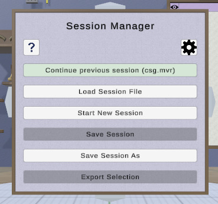
The Session Panel is shown when the application starts and can also be brought
up at any time by clicking on the Session Panel Tool.
This panel is used to start, save, and load sessions. Sessions are saved as
text files with an ".mvr" (MakerVR) extension. Feel free to look at and edit
the session files if that's your thing.
The Session Panel has the following buttons:
Continue previous/current session. When the application starts, this choice will be enabled if your previous session was saved with a name (which will appear here in parentheses). Click this to resume working in that session. If the panel is invoked during a session, clicking this button will act as if nothing happened.Load session file. This can be used to load a different session file with the File Panel. If you use this during a session, you will be informed if you made any changes that you might want to save.Start new session. This resets everything to empty and starts a new, unnamed session. If you use this during a session, you will be informed if you made any changes that you might want to save.Save session. If your session is already named, this will be enabled to save it again if you made any changes.Save session as. This lets you save your session with a different name using the File Panel.Export Selection. The application would be pretty useless if there is no way to send the model information to a 3D printer, right? This button lets you export the selected model(s) to a file, using a File Panel. The File Panel contains a dropdown that allows you to select the desired format (text or binary STL).Help(question mark icon at top left). Brings up the Help Panel. Dismissing the Help Panel returns to the Session Panel.Settings(gear icon at top right). Brings up the Settings Panel. Dismissing the Settings Panel returns to the Session Panel.
The default directories for session files and STL files are both stored as user settings and can be modified with the Settings Panel.
Settings Panel

The Settings Panel lets you modify all user settings that are saved between sessions. The location of the saved setting is defined by Unity PlayerPrefs.
Default Directories
The first three items are the default directories for
sessions, STL import, and STL
export. Each of these lets you type in the
directory or click on the Browse button to open a File Panel
for that item.
Tooltip Delay
Next is a slider to adjust the time it takes for tooltips to appear when hovering the mouse or laser pointer over an interactive object. Values are in seconds, from 0 at the left to 5 at the right. Setting this to 0 disables tooltips completely.
Build Volume Size
Next are three text input fields that allow you to specify the build volume size in all three dimensions, using the current units. See the Build Volume Toggle Tool
Unit Conversion
Next are two sets of dropdowns allowing conversion of units on model import and export. Use of these is explained in the section on Coordinate System and Units.
Radial Menus
Last is a button that brings up the Radial Menu Editor Panel, which allows you to edit the radial menus,
Info Panel
The Info Panel shows information about all selected models, including the number of vertices, number of triangles, and size in all three dimensions. If any model has an invalid mesh, this is noted, along with the reason it is considered invalid.
The info area in the panel will contain scroll bars if there is more text than will fit. Also note that the Info Panel has resize handles (spheres) in the corners to change its size.
Help Panel
The Help Panel shows some brief "about" text including the current application version. Below that are two buttons that should bring up this user guide or the Cheat Sheet for reference in your default browser.
Radial Menu Editor Panel
This panel can be opened from the Settings Panel to edit the radial menus. The radio buttons in the box at the top let you choose one of the following options:
Use Independent Settings: The buttons defined for each controller are used for that controller.Use Left Settings for Both: The buttons defined for the left controller are used for both controllers.Use Right Settings for Both: The buttons defined for the right controller are used for both controllers.
You can set the number of buttons to use on a controller to 1, 2, 4, or 8. The menu diagram updates to reflect the current number. Clicking on any button in the diagram brings up the Action Panel to let you choose the action attached to that button. Each action is indicated by a horribly-designed 2D icon that will show up in the radial menu diagram and in the actual radial menu as well. The null icon () means that no action is bound to a button.
You can activate a radial menu by pressing the menu button on a controller. Radial menus are always available in conventional mode via keyboard shortcuts for use with the mouse.
Action Panel
The Action Panel is used by the Radial Menu Editor Panel to select the action associated with a radial menu button. It presents a scrolling list of actions. You can scroll the panel using the scrollbar on the right (mouse or pinch), dragging the contents up or down (mouse or pinch), by pressing the Up or Down trackpad buttons on a VR controller, or by using a scroll wheel. You can also resize the panel with the resize handles (spheres) in the corners.
The actions in the panel are organized roughly by shelf or sections of this
User Guide. The action that is currently bound to the button being modified is
marked as [CURRENT].
See the Cheat Sheet for a list of all actions and their associated icons.
File Panel

The File Panel is used by the Session Panel, the Settings Panel, and the Import Tool when a directory or file needs to be chosen. It works pretty much like a standard file browser. The four buttons at the top go to the previous directory (if any), the next directory (if you went to the previous one), one directory up, or your home directory. A button at the bottom lets you see hidden files and directories (operating-system-specific).
The scrolling list is color coded for directories and files, with directories listed first. You can scroll the list using the scrollbar on the right (mouse only), dragging the contents up or down (mouse only), or by pressing the Up or Down trackpad buttons on a VR controller.
The File Format dropdown at the top right is used for selecting a format when exporting files.
Text Panel

The Text Panel is brought up by the text icon on the Model Creation Shelf to create or modify extruded 3D text. It lets you specify the following settings:
- Text string.
- Font family. You can select from the dropdown list containing all available font families.
- Font style. This dropdown lets you select from the styles available for the currently-selected family.
- Character spacing (slider). This factor multiplies the spacing between individual characters to move them closer together or further apart. The default is 1, which is the spacing defined by the font.
3D text is laid out by default at the origin along the X axis, extruded 2 units along the +Z (up) direction. It is sized by default so that the characters are approximately 4 units in the Y dimension. The Scale Tool can be used to change the size, and the Complexity Tool can be used to change how finely the characters are tessellated into triangles.
The font family dropdown can contain many items, so it is important to know that the trackpad up/down buttons can be used to scroll a dropdown list when using VR controllers. A scroll wheel works in conventional mode.
Quirks
Every application has some quirks that may need extra explanation. So far, there is really only one for MakerVR.
Copy, Paste, Undo, Redo
The interactions between copy and paste operations, coupled with undo and redo, are generally intuitive, but may require some explanation. Here are the basic rules:
- Copying a model to the clipboard creates a clone of the model, meaning that any changes to the original model will not affect the copy.
- Pasting a model from the clipboard also creates a clone, so that changes to the pasted model will not affect the model in the clipboard or any other models created by pasting it at other times.
- Pasted clones will have the same name as the original model in the clipboard,
but with a letter appended to it after an underscore (such as
"Box_1_A"). - Undoing and redoing a paste operation always pastes the exact models that were pasted the first time.
- Undoing and redoing any commands have no effect on the contents of the clipboard. Note that you can use this feature to your advantage if you want to undo back to an earlier state but still have another model available to paste into the scene.